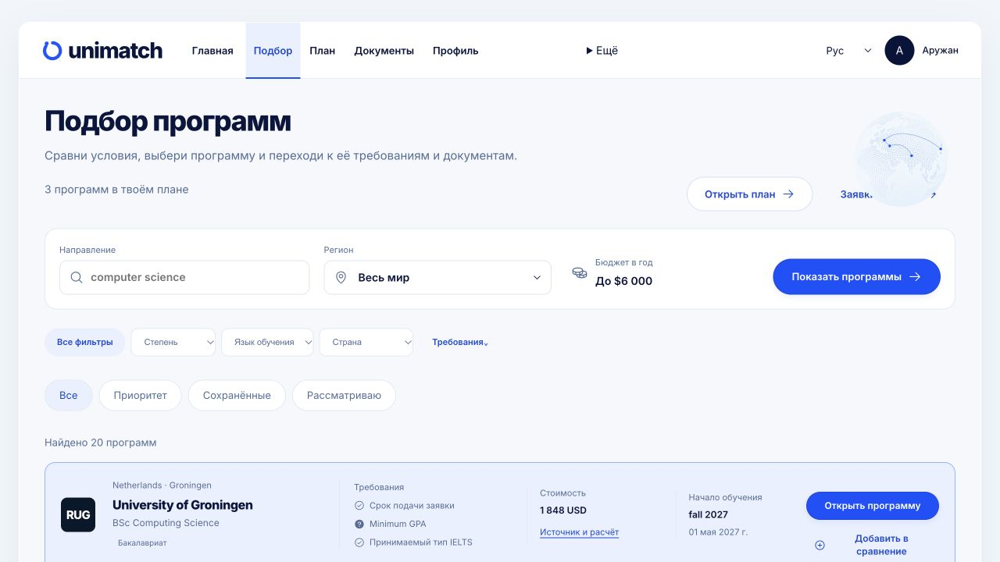
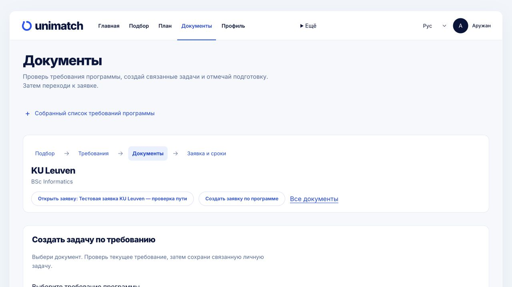
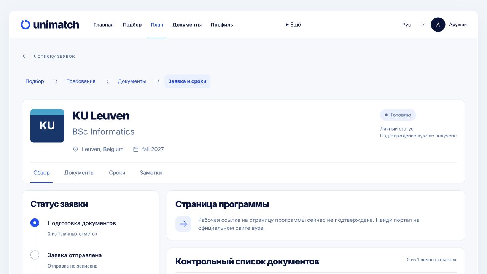
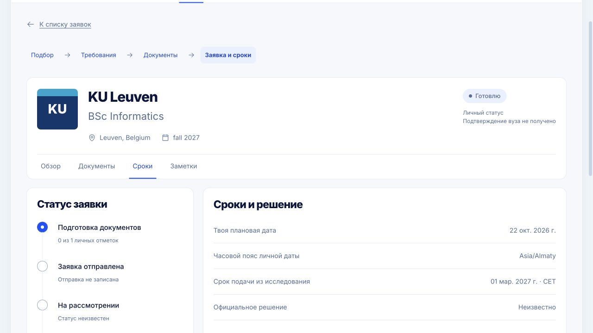
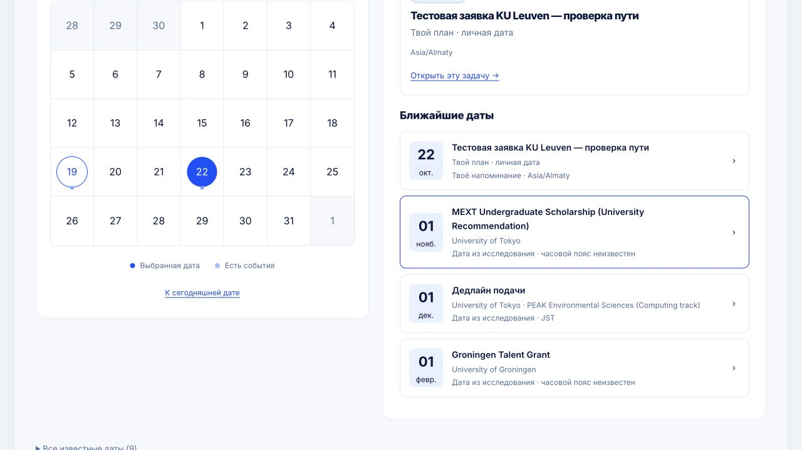
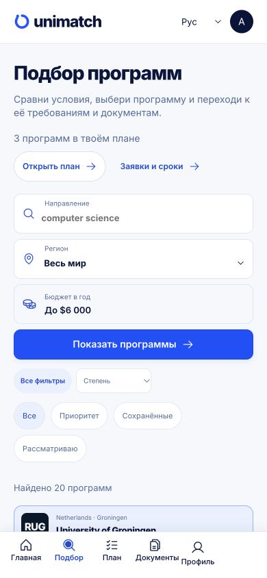
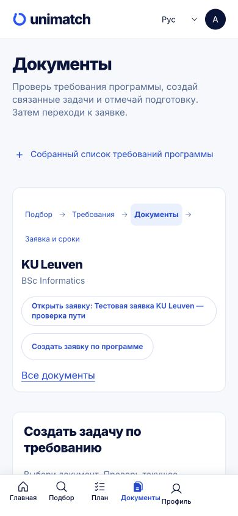
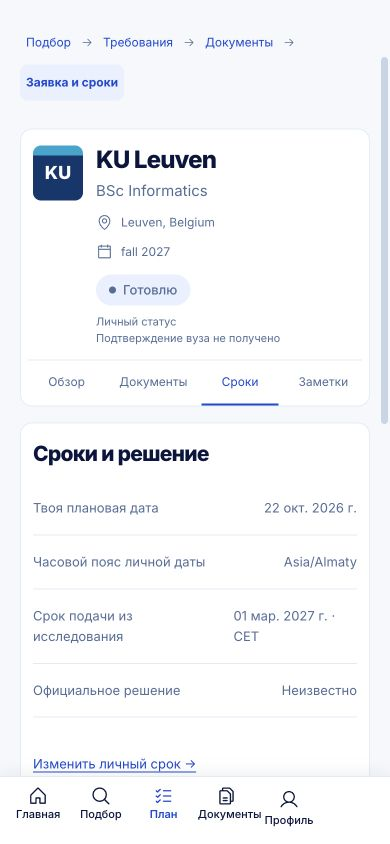

Local implementation, 19 October 2026. Existing visual style preserved.
Open applicationFind opens a case-owned programme. Requirement review creates a source-bound document task through the existing API. Documents filter by programme/application, with explicit linking of existing tasks. Application forms prefill the selected programme without automatically writing. Lists expose real status, planned dates and document links. Detail views distinguish personal dates from university deadlines. Focus, press feedback and reduced motion work.
1029 frontend tests / 107 files PASS; TypeScript and build PASS; lint: zero errors, nine inherited warnings.
Native synthetic path: select KU Leuven, review requirement, create task, mark in progress, create application, update planned date, associate task, reload and verify, open calendar. Synthetic records retained for review.
Self-reported progress is not a file upload or university submission. Backend unchanged/not rerun; production not deployed. The initial three failing frontend checks and nullable layout type error are preserved separately from final passing gates.
Exact verification and limits | Source hashes | Tests | Lint | Build






